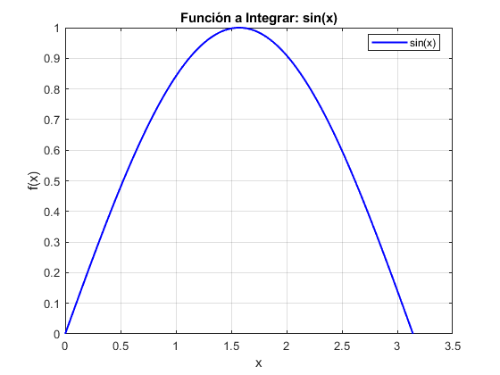
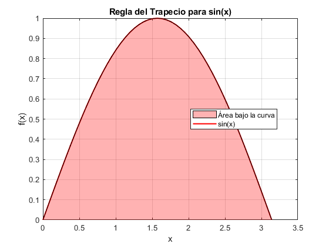
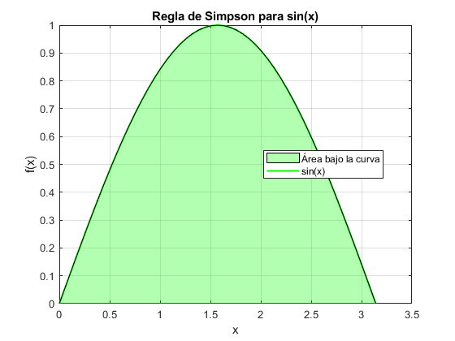
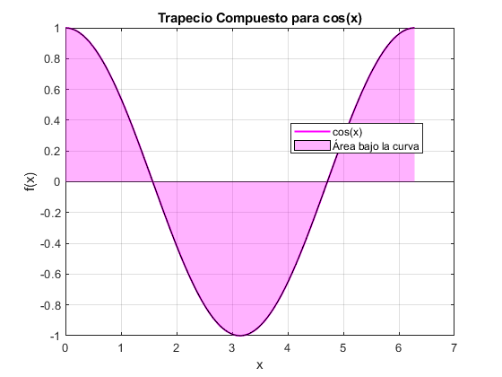
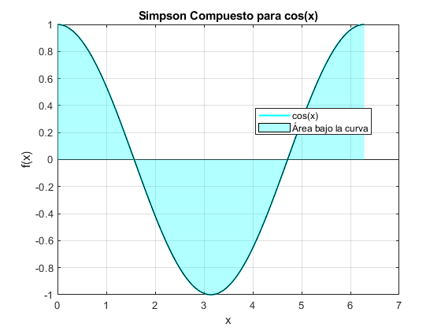
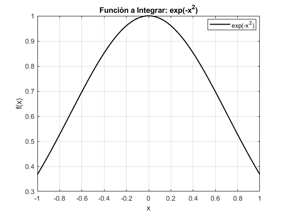
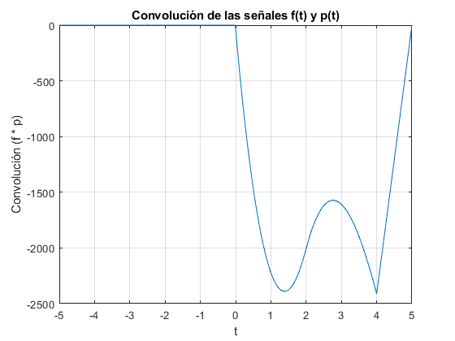
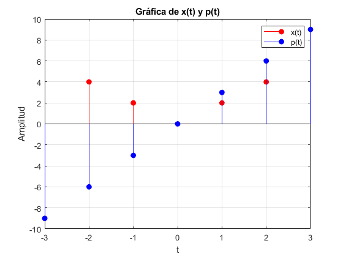
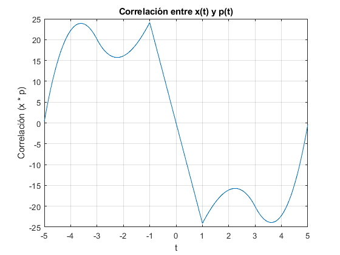
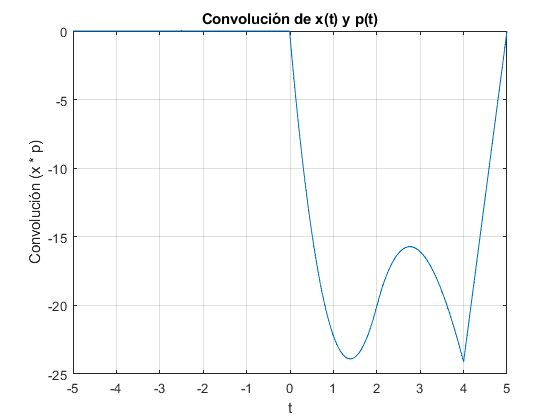

Práctica 6: Convolución y Correlación de señales
- Lopez Solano Irvin
- Moreno Castro Jose Pablo
- Pedraza Ocampo Eduardo
- Portillo Martinez Carolina
- Reyes Alvarez Angel
Contents
INTRODUCCION
Teorema Fundamental del Cálculo
f = @(x) sin(x); % Función a integrar a = 0; % Límite inferior de integración b = pi; % Límite superior de integración integralValue = integral(f, a, b); % Cálculo de la integral disp('Teorema Fundamental del Cálculo:'); disp('El Teorema Fundamental del Cálculo establece la relación entre la diferenciación y la integración.'); disp(['El valor de la integral de sin(x) de 0 a pi es: ', num2str(integralValue)]); x = linspace(a, b, 1000); % Puntos para graficar y = f(x); figure; plot(x, y, 'b', 'LineWidth', 1.5); title('Función a Integrar: sin(x)'); xlabel('x'); ylabel('f(x)'); grid on; set(gca, 'FontSize', 10); set(gca, 'FontName', 'Arial'); legend('sin(x)', 'Location', 'best'); pause(1); % Pausa para mostrar el gráfico
Teorema Fundamental del Cálculo: El Teorema Fundamental del Cálculo establece la relación entre la diferenciación y la integración. El valor de la integral de sin(x) de 0 a pi es: 2
Regla del Trapecio de Newton-Cotes
f = @(x) sin(x); % Función a integrar a = 0; % Límite inferior b = pi; % Límite superior n = 50; % Número de subintervalos x = linspace(a, b, n+1); % Puntos donde se evaluará la función h = (b - a) / n; % Ancho de cada subintervalo integralValue = h * (sum(f(x)) - (f(a) + f(b)) / 2); % Fórmula del trapecio disp('Regla del Trapecio:'); disp('La regla del trapecio divide el área bajo la curva en trapecios y lo estima como la suma de áreas de estos trapecios.'); disp(['El valor de la integral de sin(x) de 0 a pi es: ', num2str(integralValue)]); figure; plot(x, f(x), 'r', 'LineWidth', 1.5); hold on; area(x, f(x), 'FaceColor', [1 0 0], 'FaceAlpha', 0.3); title('Regla del Trapecio para sin(x)'); xlabel('x'); ylabel('f(x)'); grid on; set(gca, 'FontSize', 10); set(gca, 'FontName', 'Arial'); legend('sin(x)', 'Área bajo la curva', 'Location', 'best'); hold off; pause(1); % Pausa para mostrar el gráfico
Regla del Trapecio: La regla del trapecio divide el área bajo la curva en trapecios y lo estima como la suma de áreas de estos trapecios. El valor de la integral de sin(x) de 0 a pi es: 1.9993
Regla de Simpson de Newton-Cotes
f = @(x) sin(x); % Función a integrar a = 0; % Límite inferior b = pi; % Límite superior n = 50; % Número de subintervalos (debe ser par) x = linspace(a, b, n+1); % Puntos donde se evaluará la función h = (b - a) / n; % Ancho de cada subintervalo integralValue = h/3 * (f(a) + 4*sum(f(x(2:2:end-1))) + 2*sum(f(x(3:2:end-2))) + f(b)); % Fórmula de Simpson disp('Regla de Simpson:'); disp('La regla de Simpson utiliza polinomios de segundo orden para aproximar la función y calcular el área bajo la curva.'); disp(['El valor de la integral de sin(x) de 0 a pi es: ', num2str(integralValue)]); figure; plot(x, f(x), 'g', 'LineWidth', 1.5); hold on; area(x, f(x), 'FaceColor', [0 1 0], 'FaceAlpha', 0.3); title('Regla de Simpson para sin(x)'); xlabel('x'); ylabel('f(x)'); grid on; set(gca, 'FontSize', 10); set(gca, 'FontName', 'Arial'); legend('sin(x)', 'Área bajo la curva', 'Location', 'best'); hold off; pause(1); % Pausa para mostrar el gráfico
Regla de Simpson: La regla de Simpson utiliza polinomios de segundo orden para aproximar la función y calcular el área bajo la curva. El valor de la integral de sin(x) de 0 a pi es: 2
Regla del Trapecio Compuesto
f = @(x) cos(x); % Función a integrar a = 0; % Límite inferior b = 2*pi; % Límite superior n = 100; % Número de subintervalos x = linspace(a, b, n+1); % Puntos donde se evaluará la función h = (b - a) / n; % Ancho de cada subintervalo integralValue = h/2 * (f(a) + 2*sum(f(x(2:end-1))) + f(b)); % Fórmula del trapecio compuesto disp('Trapecio Compuesto:'); disp('El trapecio compuesto divide el intervalo en múltiples segmentos y aplica la regla del trapecio a cada uno.'); disp(['El valor de la integral de cos(x) de 0 a 2*pi es: ', num2str(integralValue)]); figure; plot(x, f(x), 'm', 'LineWidth', 1.5); hold on; area(x, f(x), 'FaceColor', [1 0 1], 'FaceAlpha', 0.3); title('Trapecio Compuesto para cos(x)'); xlabel('x'); ylabel('f(x)'); grid on; set(gca, 'FontSize', 10); set(gca, 'FontName', 'Arial'); legend('cos(x)', 'Área bajo la curva', 'Location', 'best'); hold off; pause(1); % Pausa para mostrar el gráfico
Trapecio Compuesto: El trapecio compuesto divide el intervalo en múltiples segmentos y aplica la regla del trapecio a cada uno. El valor de la integral de cos(x) de 0 a 2*pi es: -1.6742e-16
Regla de Simpson Compuesta
f = @(x) cos(x); % Función a integrar a = 0; % Límite inferior b = 2*pi; % Límite superior n = 100; % Número de subintervalos (debe ser par) x = linspace(a, b, n+1); % Puntos donde se evaluará la función h = (b - a) / n; % Ancho de cada subintervalo integralValue = h/3 * (f(a) + 4*sum(f(x(2:2:end-1))) + 2*sum(f(x(3:2:end-2))) + f(b)); % Fórmula de Simpson compuesta disp('Simpson Compuesto:'); disp('El método de Simpson compuesto utiliza la regla de Simpson en múltiples subintervalos para una mejor aproximación.'); disp(['El valor de la integral de cos(x) de 0 a 2*pi es: ', num2str(integralValue)]); figure; plot(x, f(x), 'c', 'LineWidth', 1.5); hold on; area(x, f(x), 'FaceColor', [0 1 1], 'FaceAlpha', 0.3); title('Simpson Compuesto para cos(x)'); xlabel('x'); ylabel('f(x)'); grid on; set(gca, 'FontSize', 10); set(gca, 'FontName', 'Arial'); legend('cos(x)', 'Área bajo la curva', 'Location', 'best'); hold off; pause(1); % Pausa para mostrar el gráfico
Simpson Compuesto: El método de Simpson compuesto utiliza la regla de Simpson en múltiples subintervalos para una mejor aproximación. El valor de la integral de cos(x) de 0 a 2*pi es: -1.7672e-16
Cuadratura Gaussiana
f = @(x) exp(-x.^2); % Función a integrar a = -1; % Límite inferior b = 1; % Límite superior integralValue = integral(f, a, b); % Cálculo de la integral disp('Cuadratura Gaussiana:'); disp('La cuadratura gaussiana utiliza pesos y nodos específicos para una aproximación precisa de la integral.'); disp(['El valor de la integral de exp(-x^2) de -1 a 1 es: ', num2str(integralValue)]); x = linspace(a, b, 1000); % Puntos para graficar y = f(x); figure; plot(x, y, 'k', 'LineWidth', 1.5); title('Función a Integrar: exp(-x^2)'); xlabel('x'); ylabel('f(x)'); grid on; set(gca, 'FontSize', 10); set(gca, 'FontName', 'Arial'); legend('exp(-x^2)', 'Location', 'best'); pause(1); % Pausa para mostrar el gráfico
Cuadratura Gaussiana: La cuadratura gaussiana utiliza pesos y nodos específicos para una aproximación precisa de la integral. El valor de la integral de exp(-x^2) de -1 a 1 es: 1.4936
Punto3
%t = -5:0.01:5; c = zeros(size(t)); % Definición de f(t) y p(t) f = zeros(size(t)); f(t >= -2 & t <= 0) = -2 * t(t >= -2 & t <= 0); f(t >= 0 & t <= 2) = 2 * t(t >= 0 & t <= 2); p = zeros(size(t)); p(t >= -3 & t <= 3) = 3 * t(t >= -3 & t <= 3); for i = 1:length(t) for j = 1:length(t) if (i + 1 - j) > 0 && (i + 1 - j) <= length(t) c(i) = c(i) + f(j) * p(i + 1 - j); end end end plot(t, c); xlabel('t'); ylabel('Convolución (f * p)'); title('Convolución de las señales f(t) y p(t)'); grid on; %
Punto 4
Se realiza la correlación de las señales (c) con (d) del problema 3.1.1 de lathi, donde la señal de azul es c y la de rojo es b
t1 = -2:2; x = zeros(size(t1)); x(t1 >= -2 & t1 <= 0) = -2 * t1(t1 >= -2 & t1 <= 0); x(t1 >= 0 & t1 <= 2) = 2 * t1(t1 >= 0 & t1 <= 2); t2 = -3:1:3; p = 3 * t2; figure; stem(t1, x, 'r', 'filled', 'MarkerFaceColor', 'r'); hold on; stem(t2, p, 'b', 'filled', 'MarkerFaceColor', 'b'); xlabel('t'); ylabel('Amplitud'); title('Gráfica de x(t) y p(t)'); grid on; legend('x(t)', 'p(t)'); % Solucion t = -2:0.01:2; x = zeros(size(t)); x(t >= -2 & t <= 0) = -2 * t(t >= -2 & t <= 0); x(t > 0 & t <= 2) = 2 * t(t > 0 & t <= 2); t = -3:0.01:3; p = zeros(size(t)); p(t >= -3 & t <= 3) = 3 * t(t >= -3 & t <= 3); correlation = conv(x, flip(p)) * 0.01; figure; t_correlation = -5:0.01:5; t_correlation = t_correlation(1:length(correlation)); plot(t_correlation, correlation); xlabel('t'); ylabel('Correlación (x * p)'); title('Correlación entre x(t) y p(t)'); grid on; 
Punto 5
Se realiza la convolución de las señales (c) con (d) del problema 3.1.1 de lathi donde se muestra el codigo y la grafica
% Solucion %
%% Punto 5 t = -5:0.01:5; x = zeros(size(t)); p = zeros(size(t)); x(t >= -2 & t <= 0) = -2 * t(t >= -2 & t <= 0); x(t >= 0 & t <= 2) = 2 * t(t >= 0 & t <= 2); p(t >= -3 & t <= 3) = 3 * t(t >= -3 & t <= 3); convolution = conv(x, p) * 0.01; t_convolution = -5:0.01:5; convolution = convolution(1:length(t_convolution)); figure; plot(t_convolution, convolution); xlabel('t'); ylabel('Convolución (x * p)'); title('Convolución de x(t) y p(t)'); grid on;
t = -5:0.01:5; x = zeros(size(t)); p = zeros(size(t)); x(t >= -2 & t <= 0) = -2 * t(t >= -2 & t <= 0); x(t >= 0 & t <= 2) = 2 * t(t >= 0 & t <= 2); p(t >= -3 & t <= 3) = 3 * t(t >= -3 & t <= 3); convolution = conv(x, p) * 0.01; t_convolution = -5:0.01:5; convolution = convolution(1:length(t_convolution)); figure; plot(t_convolution, convolution); xlabel('t'); ylabel('Convolución (x * p)'); title('Convolución de x(t) y p(t)'); grid on;